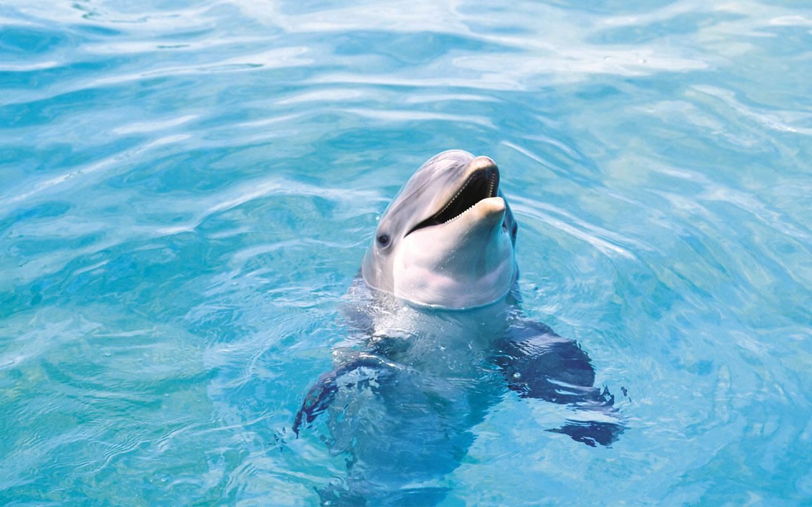
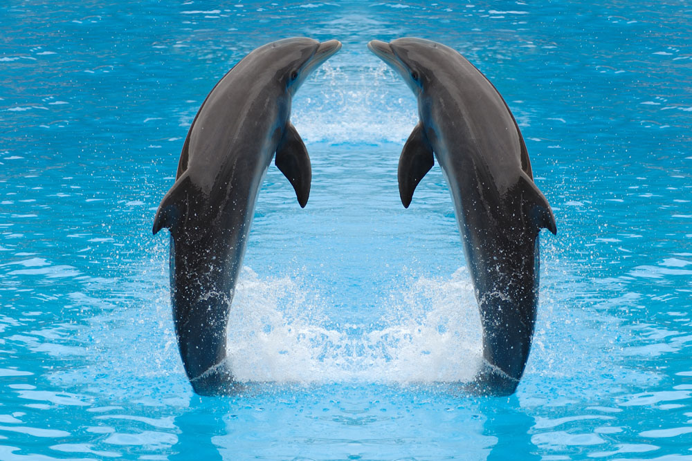
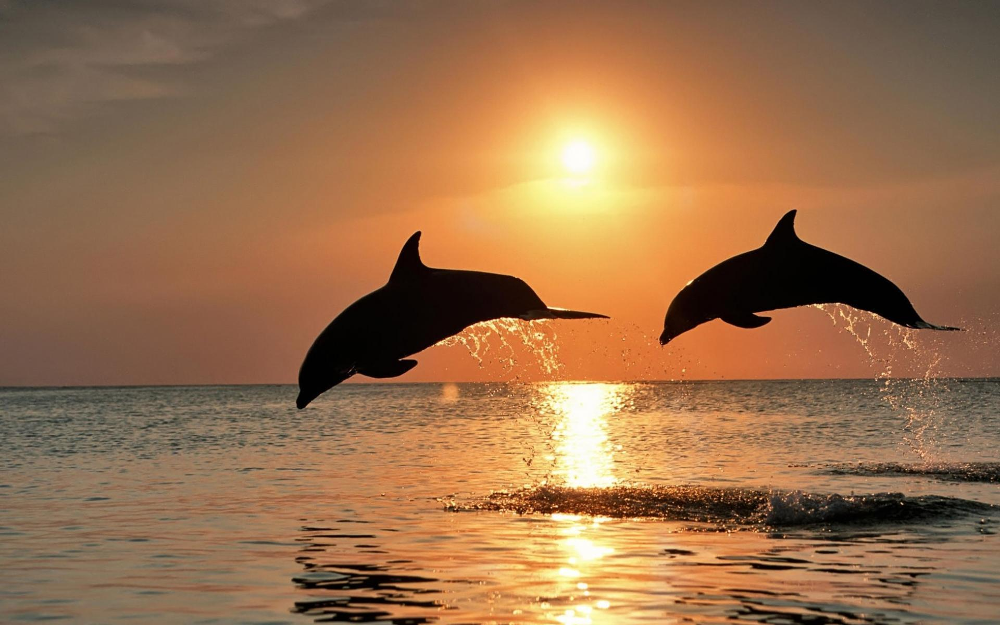
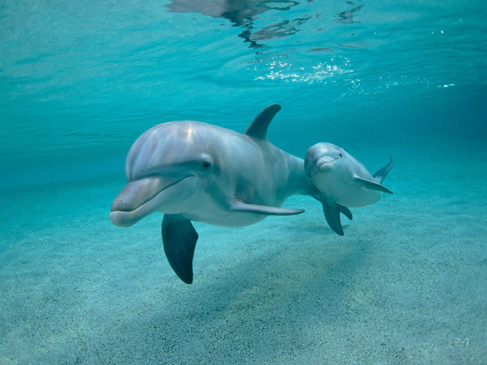

关于海豚
简介：
海豚（学名：Delphinidae）是与鲸鱼和鼠海豚密切相关的水生哺乳动物，广泛生活在大陆 架附近的浅海里，偶见于淡水之中。海豚大约包括了20几个属中的60多个种，其中海豚科是鲸目中最大的 一科，大约于1000万年前的中新世进化而成。各种海豚的长度从1.2米到9.5米，重量从40千克到10吨不等 ，它们主要以鱼类和软体动物为食。海豚是智商最高的动物之一，有着看起来友善的形态和爱嬉闹性格的 它们，在人类文化中一向十分受欢迎。。
分布范围：海豚在所有海洋和部分河流都有发现，它们一般生活在浅水或至少停留在海面附近，不像其 它鲸类那样长时间深度潜水。它游速快并带有杂耍特征，主要以鱼类和乌贼为食，虎鲸也捕食哺乳动物， 比如其他鲸类、鳍足类以及鸟类和大鱼。像其他齿鲸一样，海豚依赖回声定位进行捕食，甚至可以用高 声强行击晕猎合作方式，一个例子是，这些海豚群有时会攻击鲨鱼，通过撞击杀 死它们。成员间也会协作救助受伤或生病的个体。海豚群经常追随船只逐浪前行，时而杂技般的跃水腾 空，又落入水中，景象蔚为壮观。。。
生殖繁衍：雌海豚约经5年时间才开始性成熟，并出现排卵现象，但需再过几年才真正具有生育能力。而雄海豚一旦 成熟，则整天泡在雌海豚群中，寻找自己的“意中人”。一旦热恋起来，则采取闪电战术，交配后马上远 走它乡。作为哺乳类动物，海豚有很多特征都与人类相似。不过，由于海豚是在海中生活，与人类的陆上 环境不同，出生方式会有少许分别。幼豚出生的时侯是以尾部先出，而人类婴孩则是以头部先出。雌豚 一般要怀胎十一个月，才会诞下小海豚。
形状大小：海豚是小到中等尺寸的鲸类。体长约1.5-10米，体重50公斤-7000公斤。雌性通常比雄性大。多数海豚头部 特征显著，由于透镜状脂肪的存在，喙前额头隆起，又称“额隆”，此类构造有助于聚集回声定位和觅食 发出的声音。一些海豚虽有额隆，但喙部较短，隆起的前额仅勾画出方头外观，多数海豚的体型呈流线型 ，有钩状弯曲的背鳍也存在其们没有形态完好的喙吻，头部近似方形、体型较短粗。大 多数海豚的喙部形态显著，体纤细呈流线型。海豚头骨的面部凹陷宽阔，上颌骨后端自喙上延伸，鳞骨颧 突小，被扩大的上颌骨和额骨遮掩，喙部形态从宽短到狭长各不相同。下颚与分支融合长度不超过40%。上 齿列后偏，牙齿横截面呈圆形，较多，齿式：0/2~65/58。
感官：听觉是海豚最为灵敏的感官，捕食、游走和嬉戏，都是依靠听觉进行。各种水下作业工程设备和日夜来往不 息的大小船只，不仅惊扰了海豚的生活，海豚与船只“撞车”时有发生，这些人类活动的“噪音污染”， 也使得海豚不堪其扰，身心受损，行为失控、压力倍增、生活习性出现异常。在许多河流流域，建大坝、修 渔场、修建防洪工程，抽取水资源，已经成为大家习以为常的行为。人为地改变海豚的生存环境，修筑各 种工程，阻挡了海豚迁徙等活动。白鳍豚曾是我们引以为荣的国之瑰宝，但三峡大坝的建成，也或多或少加 速了它的悄然消逝。全球变暖、气候变化、海平面上涨引发的降水、水温和盐分等等生态环境变化，特别海豚部分沿海水温在短短半个世纪上升了3~4摄氏度，变化之快，使海豚们应接不暇，无所适从。
- 
- 
- 
- 
.jpg)